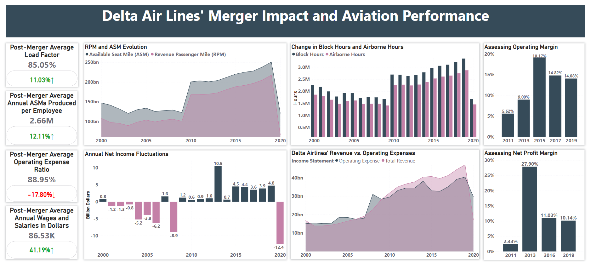

INTRODUCTION:
In our previous endeavor, titled Data Analysis of San Francisco International Airport, we delved into different aviation collaborations, with a particular focus on the merger between Delta Airlines and Northwest Airlines. This merger, announced on April 14, 2008, brought the two airlines together to form the world's largest airline, operating under the name Delta. By the beginning of 2010, all operations previously handled by Northwest Airlines had successfully transitioned to the Delta brand. This crucial milestone in 2010 serves as the starting point for our comprehensive analysis of Delta Airlines' performance following the merger.
During our previous undertaking, we faced the challenge of lacking comprehensive Key Performance Indicators (KPIs) and metrics that would enable us to accurately evaluate the success of the merger. Our evaluation primarily relied on basic benchmarks and limited data available at the time. However, for the current project, "Skyward Bound," we have acquired extensive datasets that offer valuable insights into financial and operational metrics encompassing various aspects of Delta Air Lines. These metrics include revenues, air traffic statistics, employee productivity, and much more.
The primary objective of "Skyward Bound" is to shed light on the impact of the Delta-Northwest merger on the overall performance of the airline. By meticulously analyzing a wide range of essential metrics, we aim to provide valuable insights into the transformation that took place and the outcomes achieved by Delta Airlines as a result of this momentous merger. Through this comprehensive analysis, we seek to offer a deeper understanding of the merger's implications and its significance for the airline industry.
Data Source and Preparation:
We utilized multiple datasets sourced from ADP , which were well-organized and allowed us to select the specific variables needed for our desired Key Performance Indicators (KPIs) and metrics. The data cleaning process involved various steps, including data casting, pivoting, and unpivoting the raw data. Additionally, we identified usable records and handled data formatting to ensure data quality.
To streamline the data cleaning and preparation, we employed both Excel and Power BI. Excel was particularly helpful for initial data manipulation tasks, while Power BI played a crucial role in creating an informative dashboard. This dashboard beautifully showcases the cleaned and processed data, providing visual representations of the insights derived from the datasets.
DASHBOARD:

KPIs Categories
| Category | KPIs |
|---|---|
| Performance | RPM And ASM Evolution, Post-Merger Average Load Factor |
| Operations | Change in Block Hours and Airborne Hours |
| Finance | Revenue vs. Operating Expenses, Annual Net Income Fluctuations, Operating Margin, Net Profit Margin, Operating Expenses Ratio |
| Employee Productivity | Average Annual ASMs Produced per Employee |
| Employee Compensation | Annual Wages And Salaries |
CONCLUSION:
In conclusion, our analysis of Delta Airlines' KPIs across various aspects reveals impressive numbers and notable growth ratios. This comprehensive evaluation allowed us to accurately assess the success of Delta Air Lines' merger with Northwest Airlines. The data presented on the dashboard unequivocally illustrates why Delta Airlines stands as one of the most successful airlines in the United States. The positive performance indicators demonstrate the efficacy of the merger and highlight Delta's position as a prominent player in the industry. This project reaffirms the strategic value and benefits that the merger brought to Delta Airlines, further solidifying its position as a thriving and accomplished airline.